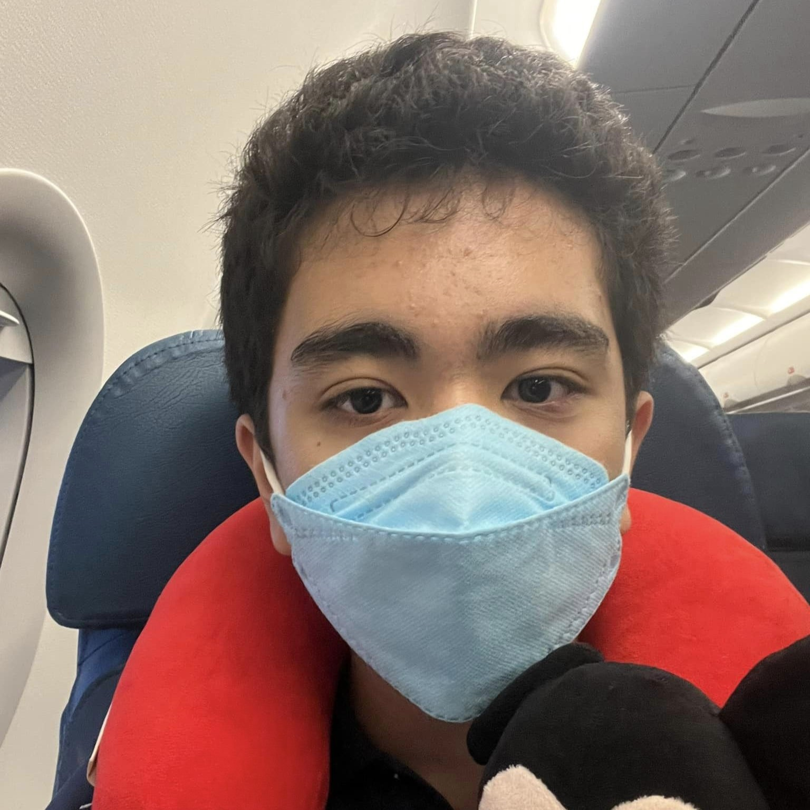

|  |
John Edward De Leonjohnedward.deleon@smc.pshs.edu.phJohn Edward De Leon is a scholar of Philippine Science High School - Southern Mindanao Campus. He started high school in 2021, and is currently in 9th grade. When he was in elementary school, he studied in St. John's School of Malaybalay. |
| Favorite things | Personal life |
|---|---|
|
De Leon was born on March 22, 2009, in Las Piñas, Metro Manila, Philippines, and raised in Malaybalay, Philippines. |